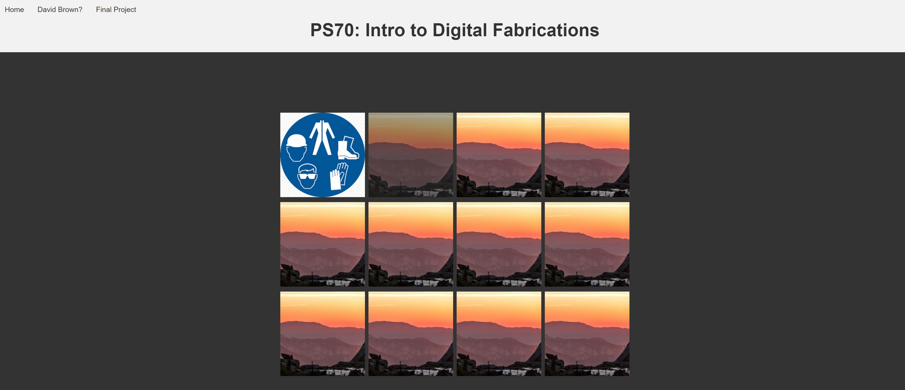

Introduction
Welcome to Week 1 of PS70: Intro to Digital Fabrications. Week 1 involved alot of onboarding and set up to prep for the rest of class. This included fun things like doing the lab safety course on the Amtrak from NYC to Boston with my phone hotspot that kept going out - thankfully I did not lose too much progress. As well, I had a blast setting up a github repository - like my own child honestly, except I hope I like my child a lot more than I envision I will like trying to keep this repo organized and setup. Anyways, I went ahead and made the first version of my site. I started with just building out a skeleton for the class to let me get a vision for what things will look like in the figure, so I setup for Weeks 1-12 to have folders and just default images in them. This way my homescreen can have these images displayed so I can figure out the layout and such of the many photos that I will have towards the end. Here is what the homepage looks like right now.
HTML and CSS
The goal of this week is to flesh out an index page to link to all of our assignments, as well as an about page to talk about us (how cute). And then spend some time working with HTML and CSS to gain some familiarity. I am currently opting for the sleek approach to have each week's photo link to the index page for that corresponding week (I am glad I made those skeleton folders now). So now when you visit the site you can click on any of the pictures and it will take you to that weeks assigment. As of right now, everything but week 1 is a stock photo from a sunrise photo I took over the summer (had to justify the 3am hike somehow), and their links dont go anywhere - but they will soon :). Sometimes you are given the opportunity to try a food and you dont expect you will like it, so you dont even want to try it. But then you do, and love it. CSS is not one of those things. I have always naivly thought it was annoying and clunky, and after spending a few hours working on it, I realize I was right. It is awful. The only thing worse than CSS is HTML itself - they were made for eachother I guess. I did eventually discover the wonders of a "style sheet" where I can put all of the styling into one file, and then input that said style sheet into each page so they maintain the same styling - its like magic. Now, each page doesn't look slightly different because I couldnt get the colors and formating to match (huzzah). The only major progress what to get this sheek little gradiant affect when you hover over the images on the main homepage. Nobody likes when websites aggressively change colors on them, so this is like easing yourself into a warm sauna.. or something like that. It was a bit of a pain to figrue out how to have hidden text that will fade in (while the image darkens to increase contrast). It happens in three steps when you hover over the image - the opacity of the image decreases, the text appear at 0 opacity, and then it gradually increases in opacity. It looks something like this:
.caption {
display: none;
position: absolute;
top: 0;
left: 0;
width: 100%;
height: 100%;
align-items: center;
justify-content: center;
flex-direction: column;
text-align: center;
color: white;
font-size: 1.2rem;
opacity: 0;
transition: opacity 0.4s ease-in-out; /* make the caption appear gradually */
pointer-events: none; /* prevent captions from blocking mouse events */
}
.photo-grid a:hover .caption {
display: block;
opacity: 1;
}
Having this code display on the website took like over an hour, at this rate, creating this website will be an infinitely long process.